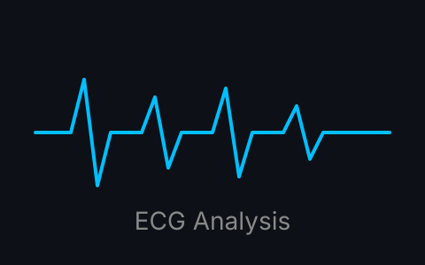
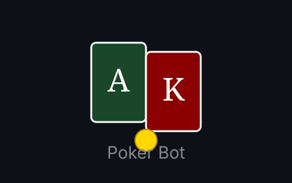
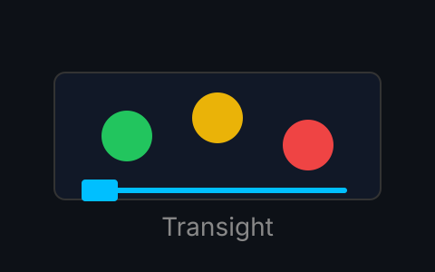
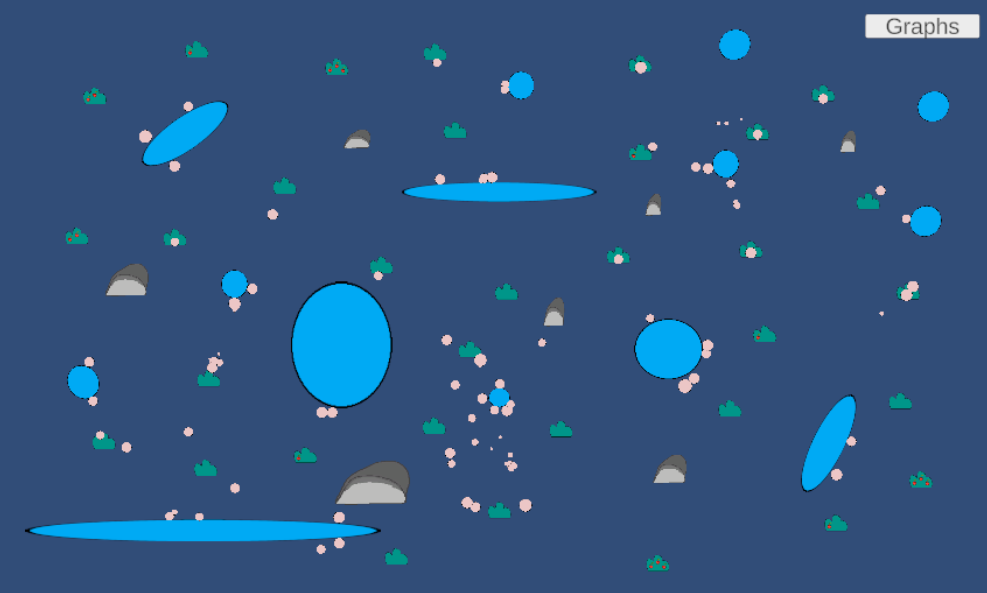

Copied!
Hi, I'm Thomson!
↓ learn more
Here's some things about me:
I'm a Biomedical Engineering student at the University of Waterloo who loves exploring design, simulations, machine learning and creative problem-solving. I especially love creating systems from scratch and seeing the results of my work in action.
However, when I'm not studying or building something, you'll probably find me playing sports, working out, cooking, or just playing some games. In fact, I find that I constantly need to be doing something, whether it's a project or a hobby, or trying something new out of curiosity.
Feel free to scroll down to check out some of my projects!
Here are some of the stuff I've done:




